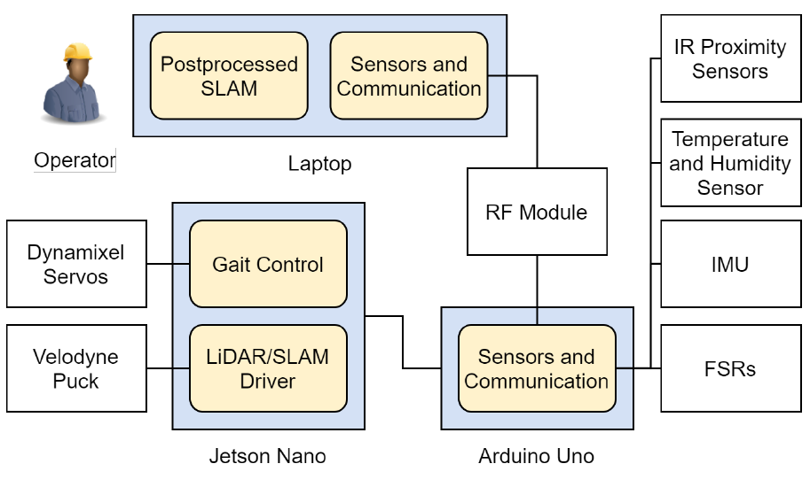
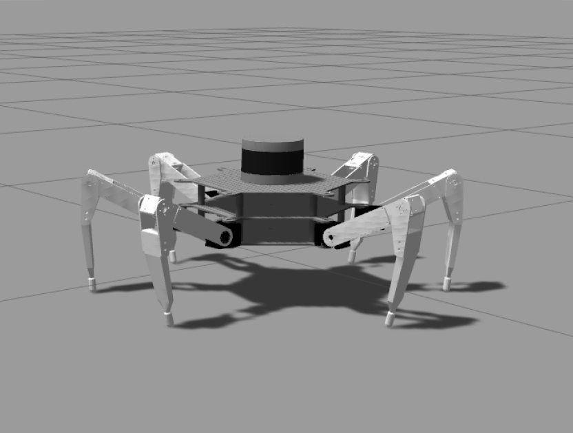
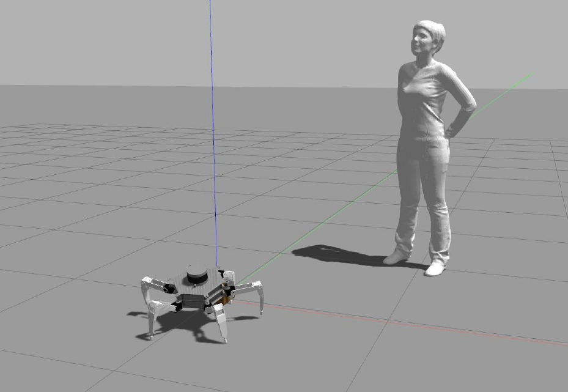
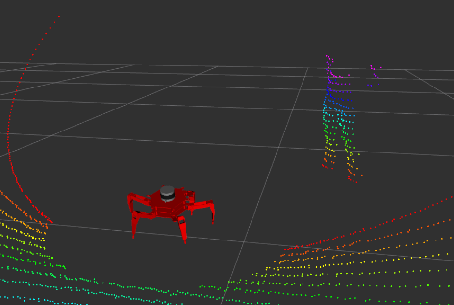
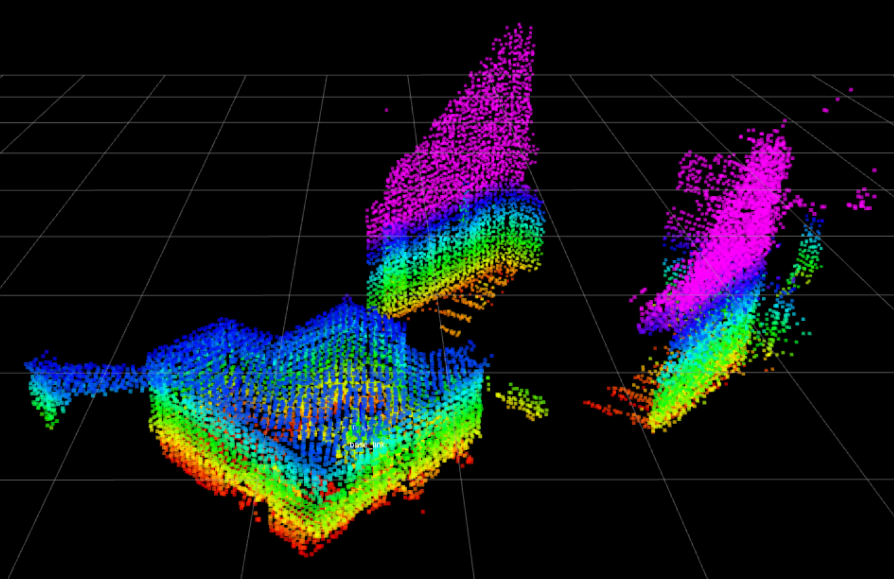
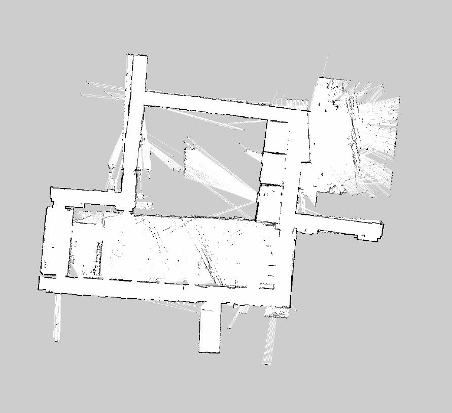
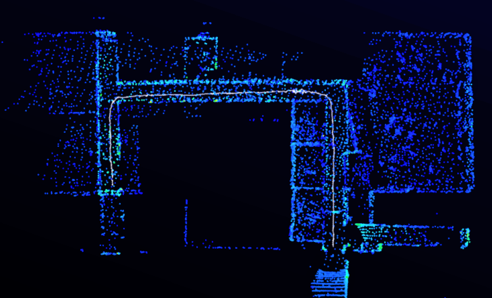
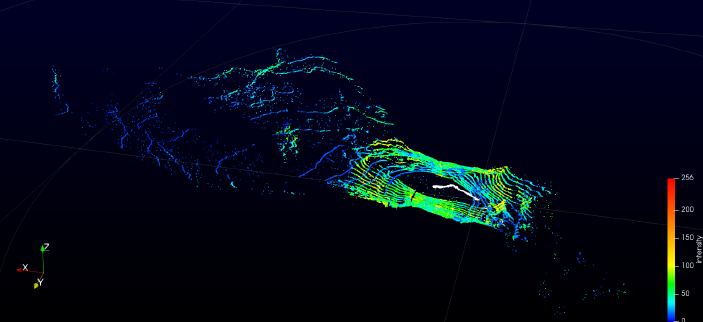

Software Implementation
The software design and implementation was my main focus of the project. My objectives were to find solutions to enable the robot to perform various tasks including:
- Real-time simultaneous localisation and mapping (SLAM)
- Walking gait control
- Path planning and autonomous navigation
I used the robot operating system (ROS) to build the software stack. ROS is an open-source set of software libraries and tools geared towards building robotics applications. The ROS framework is comprised of nodes that can subscripe to topics and push/receive messages to and from other nodes. Through incremental development and testing, I was able to interface all the services that were fundamental to our robot. These controlled the robot's walking gaits, the LiDAR mapping, and sensing and communication subsystems as shown in the diagram below.

Gait Control and Simulation
To control the motors and synchronise them into the hexapod's walking motion, I built an open-source gait control library onto the robot. I adapted the kinematics equations to match the CaveX robot geometry which translated to servo commands. Through testing and refinement, I was able to remotely control the robot's walking motion with three different walking gaits for varying speed and stability. This also allowed for controlling the robot's tilting orientation, which affects the scanning ability of the LiDAR sensor.



After verifying that the robot's movements in simulation, I used open-source remote-control drivers to allow for robot movements to be controlled at will.
Scanning and Mapping
To allow the CaveX robot to see its surroundings, I implemented open-source SLAM algorithms onto our platform. The following sceenshots show both 2D and 3D scanned maps of the Engineering honours rooms and demonstrate high fidelity and accuracy in real-time map generation. I also used Gazebo simulations to demonstrate a proof-of-concept path planning functionality. This would form the basis for autonomous navigation, however I was unable to implement this feature due to time constraints.



This scanning capability was also tested in the field. The following screenshots show the high fidelity pointclouds that were collected onsite at the Naracoorte Caves, SA. The left image shows a scan of a low crawl cave space. The right image shows a scan of the Stick-Tomato cave's main chamber.

With over 15 years of experience as a front-end developer, I've had the opportunity to work on a wide range of projects and with many different organizations. I also enjoy sharing knowledge and helping others learn and grow in their careers through teaching. If you're interested in web development or just looking to brush up on your skills, check out my courses or my YouTube series Decoded by Christina.
To learn more about my work history, check out my resume. Thanks for stopping by!